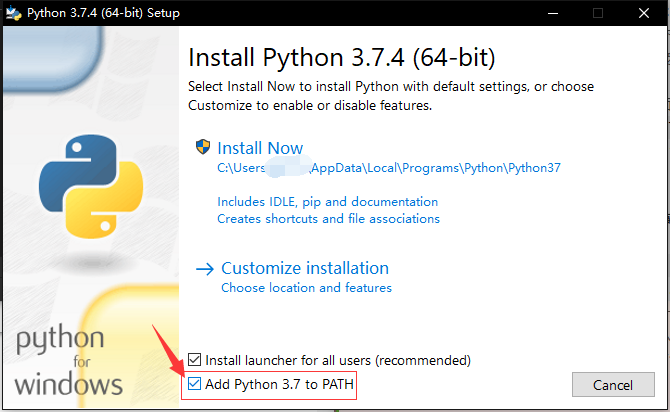
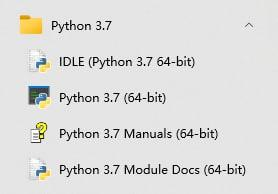

Python 速成
关于 Python
Python 是一门已在世界上广泛使用的解释型语言。它提供了高效的高级数据结构，还能简单有效地面向对象编程，也可以在算法竞赛。
Python 的优点
- Python 是一门 解释型 语言：Python 不需要编译和链接，可以在一定程度上减少操作步骤。
- Python 是一门 交互式 语言：Python 解释器实现了交互式操作，可以直接在终端输入并执行指令。
- Python 易学易用：Python 提供了大量的数据结构，也支持开发大型程序。
- Python 兼容性强：Python 同时支持 Windows、macOS 和 Unix 操作系统。
- Python 实用性强：从简单的输入输出到科学计算甚至于大型 WEB 应用，都可以写出适合的 Python 程序。
- Python 程序简洁、易读：Python 代码通常比实现同种功能的其他语言的代码短。
- Python 支持拓展：Python 会开发 C 语言程序（即 CPython），支持把 Python 解释器和用 C 语言开发的应用链接，用 Python 扩展和控制该应用。
学习 Python 的注意事项
- 目前主要使用的 Python 版本是 Python 3.7 及以上的版本，Python 2 和 Python 3.6 及以前的 Python 3 已经 不被支持，但仍被一些老旧系统与代码所使用。本文将 介绍较新版本的 Python。如果遇到 Python 2 代码，可以尝试
2to3程序将 Python 2 代码转换为 Python 3 代码。 - Python 的设计理念和语法结构 与一些其他语言的差异较大 ，隐藏了许多底层细节，所以呈现出实用而优雅的风格。
- Python 是高度动态的解释型语言，因此其 程序运行速度相对较慢，尤其在使用其内置的
for循环语句时。在使用 Python 时，应尽量使用filter、map等内置函数，或使用 列表生成 语法的手段来提高程序性能。
环境搭建
Windows
访问 https://www.python.org/downloads/ 下载自己需要的版本并安装。 为了方便，请务必勾选复选框 Add Python 3.x to PATH 以将 Python 加入环境变量。
如下图，在 Python 3.7.4 版本的安装界面中，应勾选最后一项复选框。

安装完成后，可以在开始菜单找到安装好的 Python。

此外，可以在命令提示符中运行 Python。
正常启动 Python 解释器后，它会先显示欢迎信息等内容，之后就会出现提示符 >>>，大致如下所示：
Python 3.10.1 (tags/v3.10.1:2cd268a, Dec 6 2021, 19:10:37) [MSC v.1929 64 bit (AMD64)] on win32
Type "help", "copyright", "credits" or "license" for more information.
>>>
此外，也可以在 Microsoft Store 中免费而快捷地获取 Python。
macOS/Linux
通常情况下，大部分的 Linux 发行版中已经自带了 Python。如果只打算学习 Python 语法，并无其它开发需求，不必另外安装 Python。
注意
在一些默认安装（指使用软件包管理器安装）Python 的系统（如 Unix 系统）中，应在终端中运行 python3 打开 Python 3 解释器。1
如果发行版自带 Python 版本过旧，可自行下载编译最新版本的 Python。此外，也可以通过 venv、conda、Nix 等工具管理 Python 工具链和 Python 软件包，创建隔离的虚拟环境，避免出现依赖问题。
更多详情您可以直接在搜索引擎上使用关键字 系统名称(标志版本) 安装 Python 2/3 来找到对应教程。
通过镜像下载安装文件
目前国内关于 源码 的镜像缓存主要是 北京交通大学自由与开源软件镜像站 和 华为开源镜像站，可以到那里尝试下载 Python 安装文件。
使用 pip 安装第三方库
pip 是首选的安装第三方库的程序。自 Python 3.4 版本起，它被默认包含在 Python 二进制安装程序中。
pip 中的第三方库主要存储在 Python 包索引（PyPI） 上，用户也可以指定其它第三方库的托管平台。使用方法可参照 pypi 镜像使用帮助 - 清华大学开源软件镜像站、PyPI 镜像源使用帮助 — 中国科学技术大学镜像站 等使用帮助。你可以在 MirrorZ 上获取更多 PyPI 镜像源。
基本语法
Python 的语法简洁而易懂，也有许多官方和第三方文档与教程。你可以在 Python 文档 和 Python Wiki 等网页上了解更多关于 Python 的教程。
注释
加入注释并不会对代码的运行产生影响，但加入注释可以使代码更加易懂易用。
基本数据类型
在 Python 中，你无需事先通过关键字声明变量类型和变量名，可以通过直接赋值的方式创建各种类型的变量。
整数类型和浮点数类型
Python 中的整数（比如 5、8、16）为 int 类型，浮点数（如 2.33、6.0）为 float 类型。
Python 的运算表达式与其他大部分语言（如 C++）相似，使用运算符 +、-、*、/、% 来对数字进行运算，使用 () 来进行符合结合律的分组。
>>> x = 1
>>> x
1
>>> 5 + 6
11
>>> 50 - 4 * 8
18
>>> (50 - 4) * 8
368
>>> 15 / 3 # 除法运算会永远返回 float（浮点数）类型
5.0
>>> 5 / 3
1.6666666666666667
>>> 5 % 3
2
>>> -5 % 3 # 被除数为负数的取模的结果仍然为非负数
1
>>> 2.5 * 4 # 浮点数的运算结果也是浮点数
10.0
如果想要得到除法运算后的整数结果（或对浮点数结果向下取整的结果），可以使用整数除法（//）。
Python 中，还可以使用 ** 运算符和内置的 pow(base, exp, mod=None) 函数进行幂运算，使用 abs(x) 求数的绝对值。
布尔值类型
Python 中的布尔值有且仅有 True 和 False 两个值。
布尔值也可以作为一个判断表达式初始化，如表达式 1 > 2 的值为 False。
单个布尔值可以进行逻辑非运算（not），布尔值之间可以进行逻辑与运算（and）和逻辑或运算（or）。
注意
not的优先级比（非布尔运算符的）运算低，因此not a == b会被解读为not (a == b)，而a == not b会引发语法错误。and和or是短路运算符，其会先判断第一个参数的值，但这对代码编写的影响并不大。
字符串类型
Python 中的字符串用单引号或双引号包裹，也可以使用三引号（三个单引号或三个双引号）包裹。使用三引号包裹的字符串是跨行字符串。
>>> s1 = 'abc', s2 = "abc"
>>> s1
'abc'
>>> s2
'abc'
>>> s1 == s2
True
>>> s3 = '"Hi." he said. '
>>> s3
'"Hi." he said. '
>>> s4 = '''line 0
... line 1
... line 2
... line 3'''
>>> s4
'line 0\nline 1\nline 2\nline 3'
字符串间可使用 + 运算符相连，表示将两字符串相连，如 'abc' + 'def' 得到的结果为 'abcdef'。字符串与数间可使用 * 运算符相连，表示将字符串重复，如 'a' * 3 和 3 * 'a' 的值均为 'aaa'。
可以通过关键字 in 判断一字符串是否为另一字符串的子串，如 'a' in 'abc' 的值为 True。
可以通过 len(obj) 函数获得字符串的长度，如 len('abc') 的值为
Python 中的字符串与列表（list）相似，支持通过索引（自 s = 'abc'，s[0] 与 s[2] 的值分别为 'a' 和 'c'，s[-1] 的值为 'c'。
注意
索引越界时，Python 解释器将会报错。
Python 的字符串是不可变对象，不支持直接通过索引修改字符串的某一个字符。如果需要生成不同的字符串，应新建一个字符串。
Python 也支持对字符串进行切片获取字符串的子串。切片的格式是在原本填写序列的中括号组（即 []）间填写一个左闭右开区间。例如，对于字符串 s = 'OI Wiki'，s[0:2] 和 s[3:7] 的值分别为 'OI' 和 'Wiki'。当区间左端点为字符串的开头时，可省略开始索引切片；当区间右端点为字符串的末尾时，可省略末尾索引切片。如 s[:2] 与 s[0:2] 含义相同。当区间右端点越界时，将取到字符串的末尾。如 s[3:20] 的值仍为 'Wiki'。也可以为切片指定步长（默认值为 s[0:7:2] 的值为 'O wk'。特别地，当步长为
格式字符串字面值（即 f-string）通常用于格式化字符串，它是标注了 f 或 F 前缀的字符串字面值。这种字符串可包含替换字段（即以 {} 标注的表达式）。其他字符串字面值只是常量，格式字符串字面值则是可在运行时求值的表达式。
>>> country = 'China'
>>> year = 1984
>>> f'OI entered {country} in {year}. '
'OI entered China in 1984. '
Python 的字符串类型包含 Unicode 字符，这意味着任何字符串都会存储为 Unicode。2 在 Python 中，可以对一个 Unicode 字符使用内置函数 ord() 将其转换为对应的 Unicode 编码，逆向的转换使用内置函数 chr()。
如果想把数转换为对应的字符串，可使用 Python 内置函数 str()，也可以使用 f-string 实现；反之，可以使用 int() 和 float() 两个函数。
Python 的字符串类型还有 许多方便的功能。由于本文篇幅有限，这里不一一介绍。
数据类型判断
对于一个变量，可以使用 type(object) 返回变量的类型，例如 type(8) 和 type('a') 的值分别为 <class 'int'> 和 <class 'str'>。
输出和输入
输出
print() 函数会输出给定参数的值。与表达式不同，它能处理多个任意的参数。它输出的字符串不带引号。
在需要输出的内容后可以添加两个参数 sep 与 end（分别表示各参数间的分隔符和输出后的分隔符）。默认情况下，两个参数的值分别为 ' ' 和 '\n'。
例如，运行 print('OI','Wiki',sep = ' ',end = '!\n') 将会输出 OI Wiki! 并换行。
输入
input() 函数从输入中读取一行，将其转换为字符串（除了末尾的换行符）并返回。如果函数有参数，则将会先输出参数，再读取输入内容。
在一行内输入多个数值时，可以使用字符串的 split() 方法。这一方法将返回一个按给定分隔符（默认值为 ' '）分隔后得到的字符串组成的列表（列表和字符串相似，可以通过序列访问某一元素，将在下文详细提及）。例如，如果需要输入两个整数，并输出它们的和，你可以编写以下程序。
range 对象
range 类型表示不可变的数字序列，通常用于在 for 循环中循环指定的次数。
range() 函数接受 range 对象。
当其恰有 range 对象；当仅有 range(stop) 等效于 range(0,stop)，将返回小于参数的所有非负整数组成的 range 对象；当有 range 对象中的数组成的等差数列的公差）。例如，range(1, 5) 函数与 range(1, 7, 2) 函数所得的 range 对象分别由
如果步长可以是负值，确定 range 对象的内容的公式仍然为
注意
步长的值不能为
range 对象间可以使用 == 和 != 进行比较，但是比较的内容将为 range 对象的序列，而不是生成其的函数的参数的值。
列表
list 类型
Python 支持多种复合数据类型，可将不同值组合在一起。最常用的 list ，类型是用方括号标注、逗号分隔的一组值。例如，[1, 2, 3] 和 ['a','b','c'] 都是列表。
列表可以是空列表（即 []），也可以包含不同类型的元素。列表支持索引和切片访问某一或某些元素。
对于一个 range 对象，可以使用 list() 函数将其转换为对应的列表。如 list(range(1, 5)) 的返回值为 [1, 2, 3, 4]。
append() 方法可以在列表末添加元素。insert() 方法接受两个参数，可以在列表中某一给定位置插入一个元素。pop() 方法可以返回并弹出指定索引的元素（默认为末尾元素）。
和字符串相似：列表间使用 + 运算符相连表示相连两列表，如 '[1, 2]' + [3] 得到的结果为 [1, 2, 3]；数组与数相乘表示重复数组，如 [1, 2] * 3 和 3 * [1, 2] 的值均为 [1, 2, 1, 2, 1, 2]；列表支持通过 len() 函数获取列表的长度。
注意
在部分 Python 版本中，列表的数乘是拷贝引用。在进行乘法时最好使用切片，以防修改一个元素而导致多个元素的值同时改变。
列表可以嵌套使用。如 list_s = [[1, 3], [2, 4]] 是一个合法的列表。此时，list_s[0] 的值为列表 [1, 3]，list_s[1][0] 的值为
Python 中支持列表解析，如 [abs(x) - 2 for i in range(-1, 4)] 的值为 [-1, -2, -1, 0, 1]。
count() 方法可以统计列表中某一值的出现次数。sort() 方法可以对列表中的元素进行排序。sorted() 函数可以返回排序后的列表（这一函数不改变原列表的顺序）。
使用 NumPy
NumPy 是著名的 Python 第三方科学计算库，提供高性能的数值及矩阵运算。在测试算法原型时可以利用 NumPy 避免手写排序、求最值等算法。NumPy 中的数据结构之一 ndarray（即多维数组）可以在内存中连续存储元素，且是定长的数组。一些 OJ 中都支持使用 NumPy 库。
下面的代码将介绍如何利用 NumPy 建立多维数组并进行访问。
>>> import numpy as np # 导入 NumPy 库
>>> #创建数组的方法
>>> np.empty(3) # 创建容量为 3 的浮点数数组（初始值不一定为 0）
array([0.00000000e+000, 0.00000000e+000, 2.01191014e+180])
>>> np.empty((3, 3)) # 创建容量为 3×3 的浮点数数组（初始值不一定为 0）
array([[6.90159178e-310, 6.90159178e-310, 0.00000000e+000],
[0.00000000e+000, 3.99906161e+252, 1.09944918e+155],
[6.01334434e-154, 9.87762528e+247, 4.46811730e-091]])
>>> np.zeros((3, 3)) # 创建容量为 3×3 且初始值为 0 的浮点数数组
array([[0., 0., 0.],
[0., 0., 0.],
[0., 0., 0.]])
>>> a1 = np.zeros((3, 3), dtype = int) # 创建容量为 3×3 的、初始值为 0 的整数数组 a1
>>> # 访问与赋值
>>> a1[0][0] = 1 # 写作 a1[0, 0] = 1 也被允许
>>> np.max(a1) # 访问数组最大值
1
>>> # 数组容量与切片
>>> a1.shape # 获取数组容量
(3, 3)
>>> a1[:2, :2] # 取前两行、前两列构成的子阵，无拷贝
array([[1, 0],
[0, 0]])
>>> a1[0, 2] # 获取第 1、3 列，无拷贝
array([[1, 0],
[0, 0],
[0, 0]])
>>> # 数组的操作
>>> a1.flatten() # 展开数组
array([1, 0, 0, 0, 0, 0, 0, 0, 0])
>>> np.sort(a1, axis = 1) # 沿行方向对数组进行排序，返回排序结果
array([[0, 0, 1],
[0, 0, 0],
[0, 0, 0]])
>>> a1.sort(axis = 1) # 沿行方向对数组进行原地排序
类型检查和提示
无论是参加算法竞赛还是开发项目，使用类型提示可以让你更容易地推断代码、发现细微的错误并维护干净的体系结构。Python 的支持版本都允许你指定明确的类型进行提示，有些工具可以使用这些提示来帮助你更有效地开发代码。Python 的类型检查主要是用类型标注和类型注释进行类型提示和检查。
对于 OIer 来说，掌握 Python 类型检查系统的基本操作就足够了；项目实操中，如果你需要写出风格更好的、易于类型检查的代码，可以参考 Mypy 的文档。
动态类型检查
Python 是一个动态类型检查的语言，以灵活但隐式的方式处理类型。Python 解释器仅仅在运行时检查类型是否正确，并且允许在运行时改变变量类型。
>>> if False:
... 1 + "two" # 此行代码永远不会允许，所以不会报错
... else:
... 1 + 2
...
3
>>> 1 + "two" # 这行代码被运行了，因此会报错
TypeError: unsupported operand type(s) for +: 'int' and 'str'
类型提示简例
我们首先通过一个例子来简要说明。假如我们要向函数中添加关于类型的信息，首先需要按如下方式对它的参数和返回值设置类型标注：
# headlines.py
def headline(text: str, align: bool = True) -> str:
if align:
return f"{text.title()}\n{'-' * len(text)}"
else:
return f" {text.title()} ".center(50, "o")
print(headline("python type checking"))
print(headline("use mypy", align = True))
但是这样添加类型提示没有运行时的效果——如果我们用错误类型的 align 参数，程序依然可以在不报错、不警告的情况下正常运行。
$ python headlines.py
Python Type Checking
--------------------
oooooooooooooooooooo Use Mypy oooooooooooooooooooo
因此，我们需要使用静态检查工具来排除这类错误，其中最常用的检查工具是 Mypy。
$ pip install mypy
Successfully installed mypy.
$ mypy headlines.py
Success: no issues found in 1 source file
如果没有报错，说明类型检查通过；否则，会提示出问题的地方。
注意
类型检查可向下（子类型）兼容，如 int 类型可以在 Mypy 中通过浮点数类型标注的检查（int 是 float 的子类型）。
类型标注
类型标注是自 Python 3 引入的特征，是添加类型提示的重要方法。例如这段代码就引入了类型标注，你可以通过调用 circumference.__annotations__ 来查看函数中所有的类型标注。
当然，除了函数函数，变量也是可以类型标注的，你可以通过调用 __annotations__ 来查看函数中所有的类型标注。
变量类型标注赋予了 Python 静态语言的性质，即声明与赋值分离：
>>> nothing: str
>>> nothing
NameError: name 'nothing' is not defined
>>> __annotations__
{'nothing': <class 'str'>}
类型注释
类型注释是一种特殊格式的代码注释，其作为你代码的类型提示。
import math
pi = 3.142 # type: float
def circumference(radius):
# type: (float) -> float
return 2 * pi * radius
def headline(text, width=80, fill_char="-"):
# type: (str, int, str) -> str
return f" {text.title()} ".center(width, fill_char)
def headline(
text, # type: str
width = 80, # type: int
fill_char = "-", # type: str
): # type: (...) -> str
return f" {text.title()} ".center(width, fill_char)
print(headline("type comments work", width = 40))
这种注释不包含在类型标注中，你无法通过 __annotations__ 找到它，同类型标注一样，你仍然可以通过 Mypy 运行得到类型检查结果。
装饰器
装饰器是一个函数，接受一个函数或方法作为其唯一的参数，并返回一个新函数或方法，其中整合了修饰后的函数或方法，并附带了一些额外的功能。简而言之，可以在不修改函数代码的情况下，增加函数的功能。相关知识可以参考 官方文档。
部分装饰器在竞赛中非常实用，比如 lru_cache，可以为函数自动增加记忆化的能力，在递归算法中非常实用：
@lru_cache(maxsize=128,typed=False)
- 传入的参数有 2 个：
maxsize和typed，如果不传则maxsize的默认值为 128，typed的默认值为False。 - 其中
maxsize参数表示的是 LRU 缓存的容量，即被装饰的方法的最大可缓存结果的数量。如果该参数值为 128，则表示被装饰方法最多可缓存 128 个返回结果；如果maxsize传入为None则表示可以缓存无限个结果。 - 如果
typed设置为True，不同类型的函数参数将被分别缓存，例如，f(3)和f(3.0)会缓存两次。
以下是使用 lru_cache 优化计算斐波那契数列的例子：
常用内置库
在这里介绍一些写算法可能用得到的内置库，具体用法可以自行搜索或者阅读 官方文档。
| 库名 | 用途 |
|---|---|
array | 定长数组 |
argparse | 命令行参数处理 |
bisect | 二分查找 |
collections | 有序字典、双端队列等数据结构 |
fractions | 有理数 |
heapq | 基于堆的优先级队列 |
io | 文件流、内存流 |
itertools | 迭代器 |
math | 数学函数 |
os.path | 系统路径等 |
random | 随机数 |
re | 正则表达式 |
struct | 转换结构体和二进制数据 |
sys | 系统信息 |
从例题对比 C++ 与 Python
例题 洛谷 P4779 【模板】单源最短路径（标准版）
给定一个
声明常量
# Python Code
try: # 引入优先队列模块
import Queue as pq #python version < 3.0
except ImportError:
import queue as pq #python3.*
N = int(1e5 + 5)
M = int(2e5 + 5)
INF = 0x3f3f3f3f
声明前向星结构体和其它变量
// C++ Code
struct qxx {
int nex, t, v;
};
qxx e[M];
int h[N], cnt;
void add_path(int f, int t, int v) { e[++cnt] = (qxx){h[f], t, v}, h[f] = cnt; }
typedef pair<int, int> pii;
priority_queue<pii, vector<pii>, greater<pii>> q;
int dist[N];
# Python Code
class qxx: # 前向星类（结构体）
def __init__(self):
self.nex = 0
self.t = 0
self.v = 0
e = [qxx() for i in range(M)] # 链表
h = [0 for i in range(N)]
cnt = 0
dist = [INF for i in range(N)]
q = pq.PriorityQueue() # 定义优先队列，默认第一元小根堆
def add_path(f, t, v): # 在前向星中加边
# 如果要修改全局变量，要使用 global 来声明
global cnt, e, h
# 调试时的输出语句，多个变量使用元组
# print("add_path(%d,%d,%d)" % (f,t,v))
cnt += 1
e[cnt].nex = h[f]
e[cnt].t = t
e[cnt].v = v
h[f] = cnt
Dijkstra 算法
// C++ Code
void dijkstra(int s) {
memset(dist, 0x3f, sizeof(dist));
dist[s] = 0, q.push(make_pair(0, s));
while (q.size()) {
pii u = q.top();
q.pop();
if (dist[u.second] < u.first) continue;
for (int i = h[u.second]; i; i = e[i].nex) {
const int &v = e[i].t, &w = e[i].v;
if (dist[v] <= dist[u.second] + w) continue;
dist[v] = dist[u.second] + w;
q.push(make_pair(dist[v], v));
}
}
}
# Python Code
def nextedgeid(u): # 生成器，可以用在 for 循环里
i = h[u]
while i:
yield i
i = e[i].nex
def dijkstra(s):
dist[s] = 0
q.put((0, s))
while not q.empty():
u = q.get() # get 函数会顺便删除堆中对应的元素
if dist[u[1]] < u[0]:
continue
for i in nextedgeid(u[1]):
v = e[i].t
w = e[i].v
if dist[v] <= dist[u[1]]+w:
continue
dist[v] = dist[u[1]]+w
q.put((dist[v], v))
主函数
// C++ Code
int n, m, s;
int main() {
scanf("%d%d%d", &n, &m, &s);
for (int i = 1; i <= m; i++) {
int u, v, w;
scanf("%d%d%d", &u, &v, &w);
add_path(u, v, w);
}
dijkstra(s);
for (int i = 1; i <= n; i++) printf("%d ", dist[i]);
return 0;
}
# Python Code
if __name__ == '__main__':
# 一行读入多个整数。注意它会把整行都读进来
n, m, s = map(int, input().split())
for i in range(m):
u, v, w = map(int, input().split())
add_path(u, v, w)
dijkstra(s)
for i in range(1, n + 1):
print(dist[i], end = ' ')
print()
完整的代码如下：
C++
#include <bits/stdc++.h>
using namespace std;
const int N = 1e5 + 5, M = 2e5 + 5;
struct qxx {
int nex, t, v;
};
qxx e[M];
int h[N], cnt;
void add_path(int f, int t, int v) { e[++cnt] = (qxx){h[f], t, v}, h[f] = cnt; }
typedef pair<int, int> pii;
priority_queue<pii, vector<pii>, greater<pii>> q;
int dist[N];
void dijkstra(int s) {
memset(dist, 0x3f, sizeof(dist));
dist[s] = 0, q.push(make_pair(0, s));
while (q.size()) {
pii u = q.top();
q.pop();
if (dist[u.second] < u.first) continue;
for (int i = h[u.second]; i; i = e[i].nex) {
const int &v = e[i].t, &w = e[i].v;
if (dist[v] <= dist[u.second] + w) continue;
dist[v] = dist[u.second] + w;
q.push(make_pair(dist[v], v));
}
}
}
int n, m, s;
int main() {
scanf("%d%d%d", &n, &m, &s);
for (int i = 1; i <= m; i++) {
int u, v, w;
scanf("%d%d%d", &u, &v, &w);
add_path(u, v, w);
}
dijkstra(s);
for (int i = 1; i <= n; i++) printf("%d ", dist[i]);
return 0;
}
Python
try: # 引入优先队列模块
import Queue as pq # python version < 3.0
except ImportError:
import queue as pq # python3.*
N = int(1e5+5)
M = int(2e5+5)
INF = 0x3f3f3f3f
class qxx: # 前向星类（结构体）
def __init__(self):
self.nex = 0
self.t = 0
self.v = 0
e = [qxx() for i in range(M)] # 链表
h = [0 for i in range(N)]
cnt = 0
dist = [INF for i in range(N)]
q = pq.PriorityQueue() # 定义优先队列，默认第一元小根堆
def add_path(f, t, v): # 在前向星中加边
# 如果要修改全局变量，要使用 global 来声名
global cnt, e, h
# 调试时的输出语句，多个变量使用元组
# print("add_path(%d,%d,%d)" % (f,t,v))
cnt += 1
e[cnt].nex = h[f]
e[cnt].t = t
e[cnt].v = v
h[f] = cnt
def nextedgeid(u): # 生成器，可以用在 for 循环里
i = h[u]
while i:
yield i
i = e[i].nex
def dijkstra(s):
dist[s] = 0
q.put((0, s))
while not q.empty():
u = q.get()
if dist[u[1]] < u[0]:
continue
for i in nextedgeid(u[1]):
v = e[i].t
w = e[i].v
if dist[v] <= dist[u[1]]+w:
continue
dist[v] = dist[u[1]]+w
q.put((dist[v], v))
if __name__ == '__main__':
# 一行读入多个整数。注意它会把整行都读进来
n, m, s = map(int, input().split())
for i in range(m):
u, v, w = map(int, input().split())
add_path(u, v, w)
dijkstra(s)
for i in range(1, n + 1):
print(dist[i], end = ' ')
print() # 结尾换行
参考文档
- Python Documentation,https://www.python.org/doc/
- Python 官方中文教程，https://docs.python.org/zh-cn/3/tutorial/
- Learn Python3 In Y Minutes,https://learnxinyminutes.com/docs/python3/
- Real Python Tutorials,https://realpython.com/
- 廖雪峰的 Python 教程，https://www.liaoxuefeng.com/wiki/1016959663602400/
- GeeksforGeeks: Python Tutorials,https://www.geeksforgeeks.org/python-programming-language/
参考资料和注释
创建日期: July 11, 2018